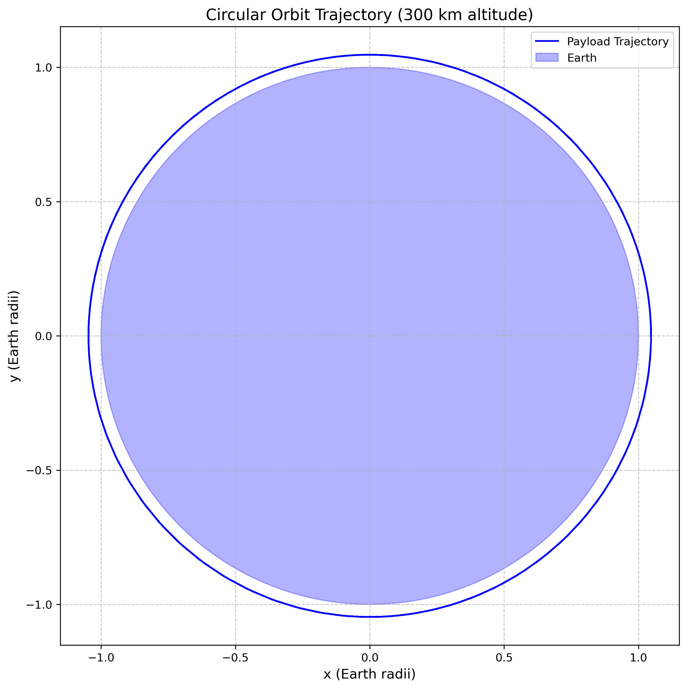
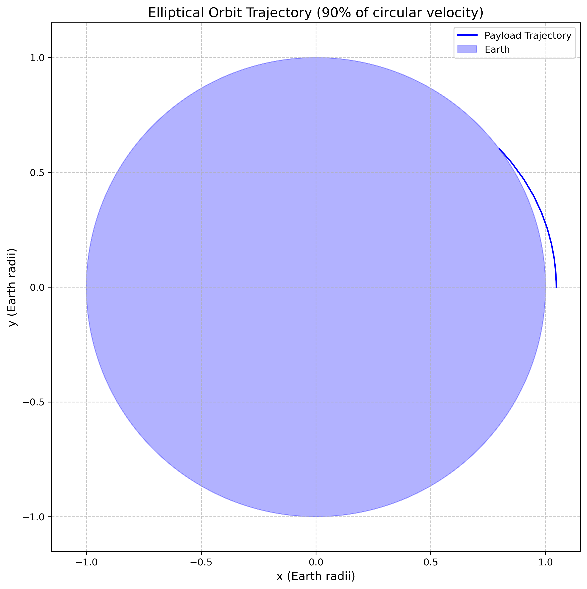
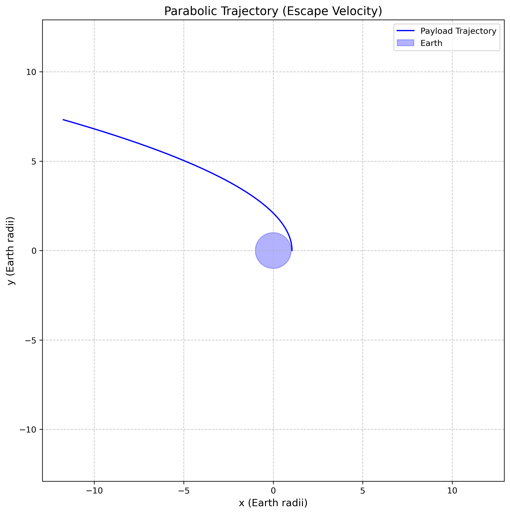
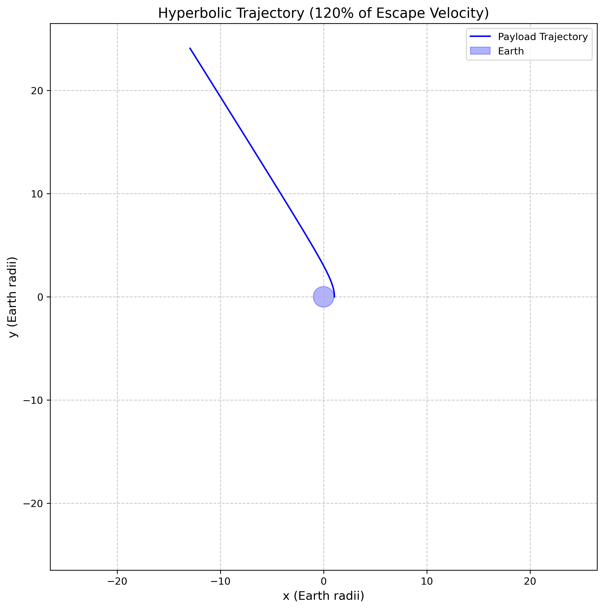
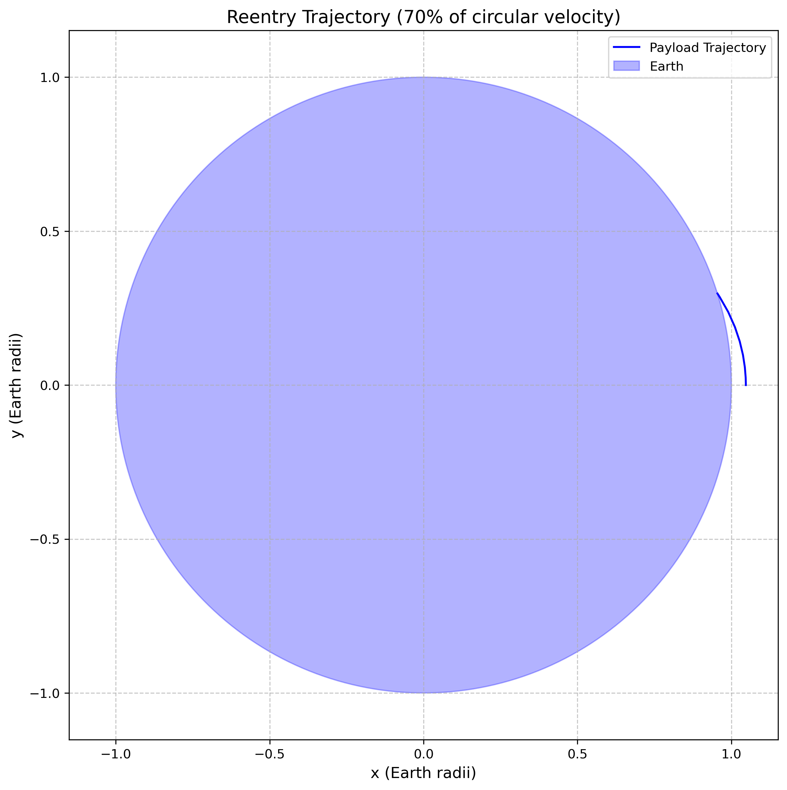
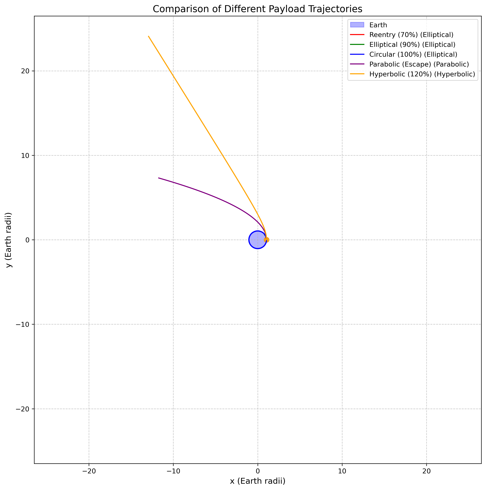
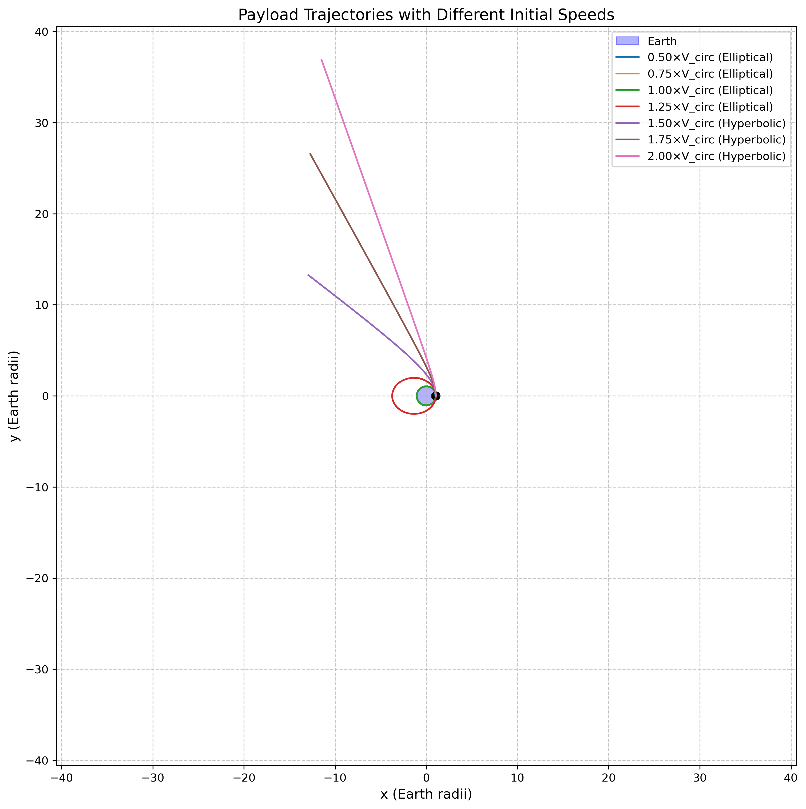
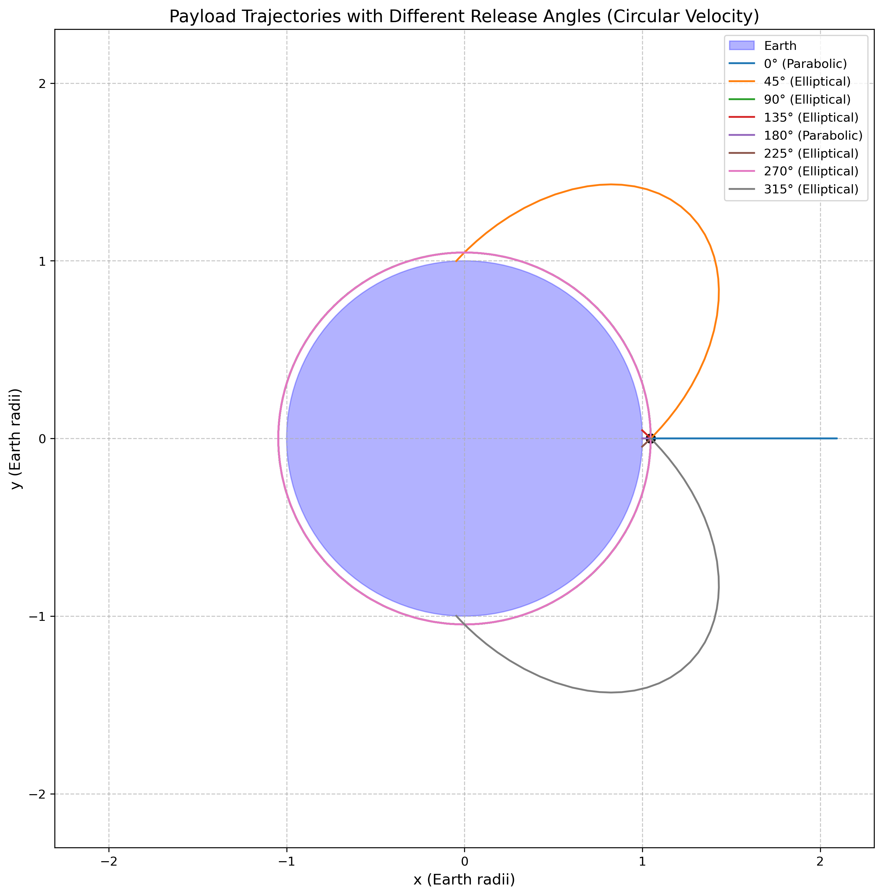

Problem 3: Trajectories of a Freely Released Payload Near Earth
Motivation
When an object is released from a moving rocket near Earth, its trajectory depends on initial conditions and gravitational forces. This scenario presents a rich problem, blending principles of orbital mechanics and numerical methods. Understanding the potential trajectories is vital for space missions, such as deploying payloads or returning objects to Earth.
1. Theoretical Foundation
1.1 Fundamental Principles
The motion of a payload released near Earth is governed by Newton's law of universal gravitation and follows the principles of orbital mechanics. The gravitational force acting on a payload of mass \(m\) at distance \(r\) from Earth's center is:
where \(G = 6.67430 \times 10^{-11} \, \text{m}^3\text{kg}^{-1}\text{s}^{-2}\) is the gravitational constant and \(M = 5.972 \times 10^{24} \, \text{kg}\) is Earth's mass.
1.2 Equations of Motion
The equation of motion for the payload in a two-dimensional coordinate system is:
where \(\mathbf{r} = (x, y)\) is the position vector and \(r = |\mathbf{r}| = \sqrt{x^2 + y^2}\).
In component form: \(\(\frac{d^2x}{dt^2} = -\frac{GM}{r^3} x\)\) \(\(\frac{d^2y}{dt^2} = -\frac{GM}{r^3} y\)\)
1.3 Conservation Laws and Orbital Parameters
Specific Energy
The specific mechanical energy (energy per unit mass) is conserved:
where \(v = \sqrt{v_x^2 + v_y^2}\) is the speed.
Angular Momentum
For planar motion, the specific angular momentum is conserved:
Eccentricity
The orbital eccentricity, which determines the shape of the trajectory, is:
1.4 Trajectory Classification
Based on the specific energy and eccentricity, trajectories are classified as:
- Circular Orbit (\(e = 0\), \(E < 0\)):
- Occurs when \(v = \sqrt{\frac{GM}{r}}\) (circular velocity)
-
Constant altitude orbit
-
Elliptical Orbit (\(0 < e < 1\), \(E < 0\)):
- Bound orbit with varying altitude
- Includes both circular and eccentric elliptical orbits
-
Semi-major axis: \(a = -\frac{GM}{2E}\)
-
Parabolic Trajectory (\(e = 1\), \(E = 0\)):
- Escape trajectory with minimum energy
-
Escape velocity: \(v_{esc} = \sqrt{\frac{2GM}{r}}\)
-
Hyperbolic Trajectory (\(e > 1\), \(E > 0\)):
- Unbound trajectory with excess energy
- Payload escapes Earth's gravitational influence
1.5 Critical Velocities
First Cosmic Velocity (Circular Velocity)
The minimum velocity for a circular orbit at radius \(r\): \(\(v_1 = \sqrt{\frac{GM}{r}}\)\)
At Earth's surface: \(v_1 = 7.91 \, \text{km/s}\)
Second Cosmic Velocity (Escape Velocity)
The minimum velocity to escape Earth's gravity: \(\(v_2 = \sqrt{\frac{2GM}{r}} = \sqrt{2} \cdot v_1\)\)
At Earth's surface: \(v_2 = 11.19 \, \text{km/s}\)
2. Numerical Analysis and Computational Methods
2.1 Numerical Integration
The orbital equations form a system of first-order ODEs:
We use the Runge-Kutta 4th order method (RK45) with adaptive step size for high accuracy.
2.2 Orbital Parameter Calculation
From initial conditions \((x_0, y_0, v_{x0}, v_{y0})\), we calculate:
- Specific energy: \(E = \frac{1}{2}(v_{x0}^2 + v_{y0}^2) - \frac{GM}{\sqrt{x_0^2 + y_0^2}}\)
- Angular momentum: \(h = x_0 v_{y0} - y_0 v_{x0}\)
- Eccentricity: \(e = \sqrt{1 + \frac{2Eh^2}{(GM)^2}}\)
- Semi-major axis: \(a = -\frac{GM}{2E}\) (for bound orbits)
2.3 Periapsis and Apoapsis
For elliptical orbits (\(e < 1\)): - Periapsis distance: \(r_p = a(1 - e)\) - Apoapsis distance: \(r_a = a(1 + e)\)
For parabolic trajectories (\(e = 1\)): - Periapsis distance: \(r_p = \frac{h^2}{2GM}\)
3. Practical Applications and Mission Scenarios
3.1 Satellite Deployment
Understanding payload trajectories is crucial for: - Orbital insertion: Achieving desired orbital parameters - Station-keeping: Maintaining proper orbit - Constellation deployment: Positioning multiple satellites
3.2 Reentry Scenarios
For controlled reentry: - Deorbit burns: Reducing velocity to ensure atmospheric entry - Reentry angle: Optimizing entry trajectory for safety - Landing accuracy: Predicting touchdown location
3.3 Escape Missions
For interplanetary missions: - Trans-lunar injection: Escaping Earth's sphere of influence - Planetary transfers: Hohmann transfer orbits - Gravity assists: Using planetary flybys for trajectory modification
3.4 Space Debris Analysis
Tracking uncontrolled payloads: - Collision avoidance: Predicting debris trajectories - Atmospheric decay: Estimating reentry times - Space situational awareness: Monitoring orbital environment
4. Computational Implementation
The comprehensive Python simulation (payload_trajectories.py) implements:
4.1 Core Functions
payload_dynamics(): Implements the gravitational equations of motionsimulate_trajectory(): Numerical integration using RK45 methodcalculate_orbital_parameters(): Computes energy, eccentricity, and orbit typeplot_trajectory(): Visualizes individual trajectoriesplot_multiple_trajectories(): Compares different initial conditions
4.2 Analysis Capabilities
The simulation generates comprehensive visualizations:
- Individual trajectory plots for each orbit type
- Trajectory comparisons showing different initial velocities
- Angular analysis showing effect of release direction
- Speed analysis demonstrating velocity effects on orbit shape
- Animated trajectories for dynamic visualization
4.3 Example Scenarios
The code simulates realistic scenarios: - Low Earth Orbit (LEO) deployment at 300 km altitude - Reentry trajectories with insufficient orbital velocity - Escape trajectories exceeding escape velocity - Transfer orbits for satellite maneuvering
5. Results and Analysis
5.1 Trajectory Types Demonstration
 Circular orbit at 300 km altitude with exact circular velocity
 Elliptical orbit with 90% of circular velocity
 Parabolic escape trajectory at exact escape velocity
 Hyperbolic trajectory with 120% of escape velocity
 Suborbital reentry trajectory with 70% of circular velocity
5.2 Comparative Analysis
 Comparison of all trajectory types from the same initial position
 Effect of different initial speeds on trajectory shape
 Effect of release angle on circular-velocity trajectories
5.3 Key Findings
- Velocity threshold effects: Small changes in initial velocity dramatically affect trajectory type
- Energy considerations: Bound vs. unbound orbits determined by total energy sign
- Angular momentum conservation: Determines orbit orientation and eccentricity
- Mission planning implications: Precise velocity control required for desired outcomes
6. Mathematical Verification
6.1 Energy Conservation Check
For any trajectory, the total energy should remain constant: \(\(E(t) = \frac{1}{2}[v_x^2(t) + v_y^2(t)] - \frac{GM}{\sqrt{x^2(t) + y^2(t)}} = \text{constant}\)\)
6.2 Angular Momentum Conservation
For central force motion: \(\(h(t) = x(t)v_y(t) - y(t)v_x(t) = \text{constant}\)\)
6.3 Orbit Equation Verification
The trajectory should satisfy the orbit equation: \(\(\frac{1}{r} = \frac{GM}{h^2}(1 + e\cos\theta)\)\)
where \(\theta\) is the true anomaly measured from periapsis.
7. Limitations and Future Enhancements
7.1 Current Model Limitations
- Two-dimensional analysis: Actual orbits are three-dimensional
- Point mass assumption: Earth treated as a point mass
- No atmospheric effects: Drag forces not considered
- No perturbations: Solar/lunar gravity and Earth oblateness ignored
7.2 Potential Enhancements
- Three-dimensional implementation: Full 3D orbital mechanics
- Atmospheric modeling: Including drag effects for low orbits
- Perturbation analysis: Adding third-body effects
- Relativistic corrections: General relativity effects for high precision
8. Conclusion
This comprehensive analysis of payload trajectories near Earth demonstrates the fundamental principles of orbital mechanics and their practical applications. The numerical simulations provide insight into:
- The critical role of initial velocity in determining trajectory type
- The mathematical relationships governing orbital motion
- The practical considerations for space mission design
- The computational methods required for trajectory analysis
Understanding these principles is essential for space mission planning, satellite operations, and space situational awareness. The computational tools developed here provide a foundation for more advanced orbital mechanics analysis and mission design applications.
References and Further Reading
- Vallado, D. A. (2013). Fundamentals of Astrodynamics and Applications. Microcosm Press.
- Curtis, H. D. (2013). Orbital Mechanics for Engineering Students. Butterworth-Heinemann.
- Prussing, J. E., & Conway, B. A. (2012). Orbital Mechanics. Oxford University Press.
- Battin, R. H. (1999). An Introduction to the Mathematics and Methods of Astrodynamics. AIAA.